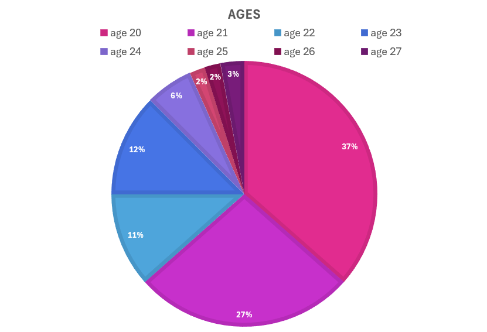
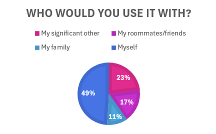

Projects where I bring together design, development, data, and creativity.
01 / Team project · In progressUX Planning + Testing
BYU Ryde
A shuttle app prototype that helps BYU students explore routes, stops, and scheduled departures. Our team planned the experience in Figma and used AI-assisted tools to create and revise the website prototype.
My focus: product brainstorming, Figma planning, prototype testing, and design feedback
Keep the map
The tester liked seeing the interactive map and their current location in both versions.
Make stops easier to find
The tester was unsure how to reach a bus stop. We plan to add clearer directions and more specific stop locations, with recognizable buildings on the map.
Search by destination
A search for an apartment complex returned a route. We identified an opportunity to show which route is closest to a searched location.
Early feedback: one tester so far. These findings are guiding our next design iteration. The project is in progress through December 2026; bus arrivals, positions, and crowding in the prototype use simulated data.
Data analysis work supporting an early-stage startup project. I used SQL to clean and analyze data, identify outliers, and support business decisions, then used Excel visualizations to communicate key metrics.
My role: Data cleaning and analysis · SQL, Excel

Survey respondent age distribution

Who respondents would use it with
These charts are included as examples of my project work; I can share more about the analysis and context in conversation.
04 / Creative businessEntrepreneurship
Emma G Dino Doodles Shop
I create and sell original dinosaur artwork through an online storefront. I use customer surveys and social media feedback to understand product preferences and guide marketing.
My role: Original artwork, storefront, marketing, and customer feedback
People, details, and making things work well are all part of the process.
I’m studying Information Systems at Brigham Young University, with an emphasis in data and business analysis. I’m exploring roles where I can combine technology, creative problem-solving, and an understanding of what people need.
Outside of class, I run Emma G Dino Doodles and enjoy hiking, baking, and spending time with friends.
Brigham Young UniversityInformation Systems · Expected April 2028
Tools I’ve used
HTMLCSSJavaScriptSQLExcelTableauGitHub
I’m continuing to build my front-end and UX skills through personal projects and coursework.
Have a project or opportunity?
Let’s connect.
I’d love to hear about internships and early-career opportunities in UX, front-end development, or related roles.